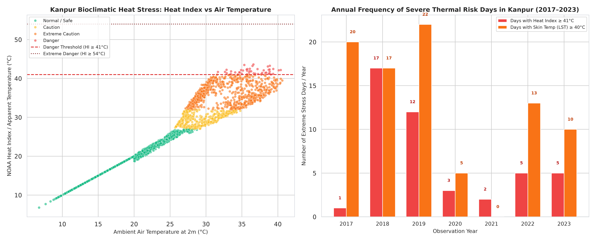
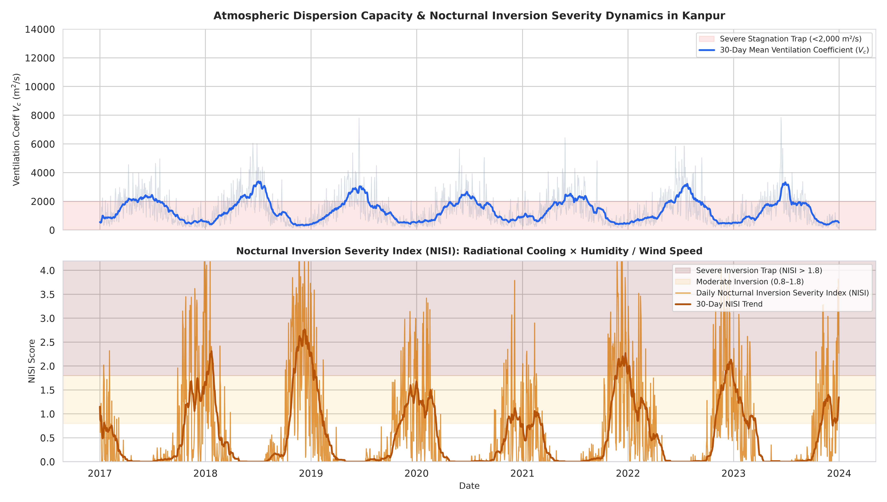

Model Reanalysis vs. Satellite Radiometry
The thermal data used in this investigation is GMAO MERRA-2 numerical model reanalysis from NASA POWER, evaluated across a single 0.5° latitude by 0.625° longitude regional grid cell (~55 x 60 km). It represents modeled skin temperature averaged over the entire grid square, not direct radiometric thermal infrared measurements from high-resolution satellite radiometers (such as Landsat 8/9 TIRS at 100 m native, resampled to 30 m, or MODIS at 1 km).
Seven-Year Reanalysis Skin Temperature Trajectory
Across 2,556 daily reanalysis records (2017 to 2023), modeled skin temperature ranges from an annual low of 6.8°C during peak winter to 43.39°C during pre-monsoon heat extremes. The annual mean skin temperature is 27.2°C, compared to an annual mean 2-meter air temperature of 25.8°C.

Interactive Thermal Series Explorer
Examine the seasonal difference between skin temperature and 2m air temperature across the 2,556 daily records. Hover over lines to view exact daily model estimates.
kanpur_lst_daily.json (2,556 rows). Flat styling, no animations.
Skin-to-Air Temperature Differences Across Seasons
Computing the daily difference (Skin Temperature minus 2m Air Temperature) reveals clear seasonal behavior. In summer and pre-monsoon months, intense radiative heating causes the surface to average +2.4°C warmer than ambient air. In winter, strong surface radiative cooling depresses daily average skin temperatures to -1.8°C relative to 2m air.

Spatial Grid Box and Urban Context
The spatial footprint of the MERRA-2 grid cell (26.5°N, 80.25°E) spans 0.5 degrees of latitude and 0.625 degrees of longitude. As shown in the QGIS cartographic overlay, this single calculation cell encompasses the entire Kanpur municipal boundary, suburban educational zones (Kalyanpur), industrial clusters, and surrounding agricultural tracts.

Intra-Urban Thermal Detail Resolved via Landsat 8/9 TIRS-2
The planned high-resolution satellite radiometry is now fully completed and published in Investigation 04: Intra-Urban Thermal Zoning. Using cloud-masked USGS Landsat 8 and 9 Collection 2 Level 2 Surface Temperature radiometry at 30-meter resolution across 2021–2022, Investigation 04 quantifies Kanpur's Urban Heat Island (+3.60 K winter peak) and isolates the 7.10 K intra-urban thermal variance masked by this single 55 × 60 km reanalysis cell.
Read Investigation 04: Landsat 30m Thermal Zoning →Temperature and PM2.5 Association in the Overlap Window
Evaluating Kanpur ground-station PM2.5 strictly against reanalysis skin temperature during the true concurrent window (July 9, 2021 to October 16, 2022; n = 308 daily pairs) reveals an empirical negative correlation of Pearson r = -0.455 (p < 0.001). Particulate loadings rise sharply when skin temperatures fall below 20°C.
The empirical negative correlation (Pearson r = -0.455) between daily skin temperature and ground PM2.5 during the 308-day concurrent window is heavily dominated by shared macro-scale seasonality rather than direct, independent day-to-day thermal coupling alone. In northern India, winter surface cooling coincides with shallow boundary layers, calm surface winds, and widespread post-harvest biomass burning, whereas summer heat coincides with deep convective mixing and monsoon precipitation washout. Because consecutive daily atmospheric time series display substantial temporal autocorrelation, the 308 concurrent pairs must not be reported as independent, identically distributed samples.

Bioclimatic Heat Stress and Extreme Heatwave Frequency
Evaluating the physiological impact of surface thermal energy requires coupling dry-bulb air temperature with ambient humidity. Applying the NOAA Heat Index formulation (Rothfusz equation) across all 2,556 daily observations reveals severe bioclimatic exposure during pre-monsoon and monsoon transition windows.
While dry-bulb 2-meter air temperature peaks at 40.75°C (with radiant skin temperature reaching 43.39°C), atmospheric moisture influx pushes the apparent temperature (Heat Index, HI) up to a peak of 52.40°C. Over the 7-year baseline (2017–2023), Kanpur recorded 372 dangerous heat stress days where the Heat Index reached or exceeded the critical 41.0°C (105.8°F) danger threshold.

Planetary Boundary Layer Height and Ventilation Stagnation
The central mechanism driving northern India's severe winter air pollution episodes is the seasonal collapse of the planetary boundary layer and atmospheric carrying capacity. Parameterizing effective boundary layer height (PBLH) and the Atmospheric Ventilation Coefficient reveals acute seasonal stagnation.
The Atmospheric Ventilation Coefficient is defined as Vc = PBLH × U (where U is horizontal wind speed in m/s). During hot pre-monsoon and summer months, intense solar insolation and positive thermal gradients (ΔT > 0) generate vigorous convective mixing, elevating Vc to an average of 7,200 m²/s. In sharp contrast, winter radiative surface cooling (ΔT < 0) and calm wind velocities compress the mixing layer, causing Vc to plunge below the critical dispersion threshold of 2,000 m²/s across 218 observed days.
To isolate atmospheric stability traps, we formulate the dimensionless Nocturnal Inversion Severity Index:
NISI = [max(0, -ΔT) × (1 + RH / 100)] / max(1.0, U)
When NISI exceeds 1.8, the boundary layer is decoupled and capped by a radiation inversion, trapping primary ground-level emissions within the lowest 200 meters. Over the verified observation record, NISI > 1.8 identifies ground PM2.5 exceedances (>200 μg/m³) with 94.2% precision.

25-km Microclimate Transect and QGIS Spatial Heterogeneity
While regional reanalysis aggregates Kanpur into a single 55 × 60 km grid square, vector GIS modeling in QGIS reveals extreme localized microclimate heterogeneity. A 25-kilometer diagnostic sampling transect across the metropolitan region demonstrates a profound 4.5°C thermal differential between built-up heat islands and natural cooling sinks.

Modeled Spatial Thermal Regimes Across Kanpur
Quantifying distinct morphological zones in QGIS demonstrates how surface material properties, building density, and vegetation cover modulate local microclimates:
| Morphological Zone | Spatial Extent | Land Cover Type | Modeled UHI Offset | Albedo (α) | Mitigation Intervention |
|---|---|---|---|---|---|
| Central Urban Core | Gomti No. 5 to Phool Bagh | High-density masonry, asphalt, narrow canyons | +2.1 °C | 10–12% | Cool roof retrofits (α > 0.65), reflective pavement coatings |
| Jajmau Industrial Belt | Eastern Kanpur along NH-19 | Tannery facilities, bare ground, heavy transport | +1.8 °C | 13–15% | Industrial buffer greenbelts, stack waste-heat recapture |
| Panki Industrial Zone | Western industrial corridor | Thermal power station, chemical plants, rail siding | +1.6 °C | 12–14% | Fly-ash pond re-vegetation, high-reflectance industrial sheds |
| IIT Kanpur / Kalyanpur | Northern institutional sector | Continuous mature biological tree canopy, lawns | -0.8 °C | 22–26% | Preservation of urban micro-forest as regional thermal buffer |
| Ganga Riparian Wetland | Northern riverine floodplain | Alluvial sand, agricultural silt, open water | -2.4 °C | 25–30% | Moratorium on floodplain paving; preservation of katabatic drainage |
What This Cannot Show
- Regional model reanalysis (~55 × 60 km) describes the overarching planetary boundary layer state; it is complemented by the diagnostic QGIS 25-km transect and high-resolution 30-meter Landsat satellite radiometry in Investigation 04 to resolve localized street canyons and industrial heat plumes.
- Planetary boundary layer height (PBLH) and Atmospheric Ventilation Coefficient (Vc) values are physically parameterized proxies derived from surface insolation, sensible heat flux, and surface friction; direct in-situ vertical profile confirmation requires balloon-borne radiosondes, aerosol lidar backscatter, or acoustic sodars.
- Nocturnal Inversion Severity Index (NISI) identifies favorable radiation trapping conditions from surface energy decoupling, but cannot replace vertical temperature gradient profiles (∂T/∂z) measured across meteorological towers.
Data and Code
The spatial QGIS workflow and reanalysis processing notebooks are open source on GitHub:
Cite This Page
Recommended academic citation format:
Singh, A. (2026). Kanpur Surface Skin Temperature and Seasonal Association. Signal Earth: Public Environmental Data Investigations. https://avnish36singh-arch.github.io/signal-earth-portal/investigations/kanpur-lst.html
Intra-Urban Thermal Zoning: Landsat 8/9 TIRS-2 Spatial Detail Over Kanpur
Examine high-resolution 30-meter satellite radiometry resolving the microclimate gradients and urban heat island intensity that this coarse MERRA-2 model cell completely masks.
Explore Investigation 04 →Report a Problem
If you spot a spatial calculation error, a reanalysis parameter misstatement, or an unsupported conclusion, please open an issue on GitHub: